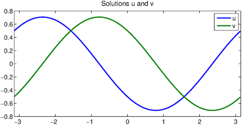

Chebfun can solve systems of ODEs with periodic boundary conditions. For example, consider the equations
$$ u - v' = 0, \qquad u'' + v = \cos(x) $$
on the interval $[-\pi, \pi]$ with periodic boundary conditions on $u$ and $v$. A Chebfun solution could be put together like this:
d = [-pi,pi];
A = chebop(d);
A.op = @(x,u,v) [u-diff(v); diff(u,2)+v];
x = chebfun('x',d);
f = [0;cos(x)];
A.bc = 'periodic';
u = A\f;
u{1}, u{2}
ans =
chebfun column (1 smooth piece)
interval length endpoint values trig
[ -3.1, 3.1] 5 0.5 0.5
Epslevel = 1.570092e-15. Vscale = 6.984011e-01.
ans =
chebfun column (1 smooth piece)
interval length endpoint values trig
[ -3.1, 3.1] 33 -0.5 -0.5
Epslevel = 1.570092e-15. Vscale = 7.069065e-01.
Because the boundardy conditions are periodic, the system of ODEs is solved with a Fourier collocation method, and the solution $u$ is represented by a Fourier series. (This is what trig means in the display of $u$ above.) We plot the result:
LW = 'linewidth'; lw = 2; FS = 'fontsize'; fs = 14;
plot(u,LW,lw), title('Solutions u and v',FS,fs), legend('u','v');

For this problem, the solution can actually be computed analytically. How close were we?
exact = [cos(x+3*pi/4) cos(x+pi/4)]/sqrt(2);
err = max([norm(u{1}-exact(:,1),inf) norm(u{2}-exact(:,2),inf)])
err =
8.207219039300383e-14
We show this also works for piecewise problems by artificially introducing a breakpoint at the origin.
A.domain = [-pi,0,pi];
u = A\f;
u{1}, u{2}
ans =
chebfun column (2 smooth pieces)
interval length endpoint values
[ -3.1, 0] 16 0.5 -0.5
[ 0, 3.1] 16 -0.5 0.5
Epslevel = 1.571719e-15. Vscale = 7.063751e-01. Total length = 32.
ans =
chebfun column (2 smooth pieces)
interval length endpoint values
[ -3.1, 0] 16 -0.5 0.5
[ 0, 3.1] 16 0.5 -0.5
Epslevel = 1.571719e-15. Vscale = 7.063751e-01. Total length = 32.
The solution is now represented by a Chebyshev series, and the equation has been solved with a Chebyshev collocation method, because Fourier collocation methods can't handle breakpoints.
plot(u,LW,lw), title('Solutions u and v',FS,fs), legend('u','v');
err = max([norm(u{1}-exact(:,1),inf) norm(u{2}-exact(:,2),inf)])
err =
4.582320677971030e-14